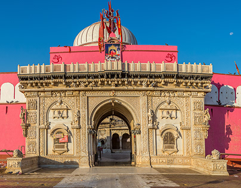
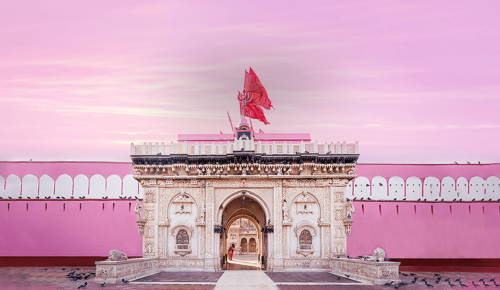

Karni Mata Temple


Karni Mata Temple
Karni Mata Temple of Deshnoke (Hindi: करणी माता मंदिर), also known as Madh Deshnoke, is a prominent Hindu temple dedicated to Karni Mata at the town of Deshnoke, located 30 km south of Bikaner, in Rajasthan. It has become the most important pilgrimage site for devotees of Charani sagatis after access to Hinglaj was restricted following the partition of India.
The temple is also a popular destination for tourists and pilgrims and is renowned, both in India and internationally, as the "Temple of Rats" due to the numerous rodents known as kābā which are considered holy and treated with utmost care by devotees. This is sometimes upheld as exemplary of an "environmentally conscious Hindu ethos". The temple draws visitors from across the country for blessings, as well as curious tourists from around the world.
The temple was originally constituted around 1530, after the mahaprayan of Karni Mata. It initially began with the inner sanctum covered by the dome and grew in size with constructions being added by the devotees through the following centuries.
Legend
Karni Mata was an embodiment of Shakti and remained celibate; she married her younger sister to her husband, Depaji, for the continuation of his line. With her, Depaji had four sons, the youngest of whom was Lakshman. Karniji cared for them as her own children.
One day, Lakshman drowned in Kapil Sarovar in nearby Kolayat while bathing. Her younger sister pleaded to Karni Mata to bring Lakshman back to life. Thus, Karni Mata lifted the boy's body with her hands and brought it to where the murti (inner sanctum) is now, closed the doors, and said not to open them. She went to the god of death, Yamraj, and demanded for Lakshman to be returned to life. The god of death queried, "if so, how will the cycle of rebirth work? By what law will it move?" Karni Mata thus declared that her family will not come to Yamraj anymore. "Wherever I live, they will live. When they die, they will stay with me.
Then, Karni Mata chose the embodied form of the kābā (rat) — so that when human Charanas from her lineage die, they will be reborn as kābā and live near her within the temple, and when kābā die, they will again be reborn as human Charanas.[4] In this manner, Charan transmigration differs from this general understanding of Hindu transmigration, in that the jāti is maintained across births despite being in a differently embodied form.
At present
In the temple complex reside approximately 20,000 kābā who are cared for by the temple's staff and workers who consider them as kin. The kābā reside and move in spaces throughout the inner temple complex, including within the main temple, the kitchen, near the massive iron pots used to make halwa, in the various side rooms, and on the rooftop. In each space, there are different food items available to the kābā.
Those nearest to the murti of Karni Mata feed on the various forms of prasad offered to the goddess such as laddu, nuts, coconut, and sugar crystals as well as milk, roti, grains, fruits, vegetables, and even liquor. For the kābā on the rooftop and near the iron pots, their diet consists mainly of grains, fruits, vegetables, roti, and water. The kābā of Deshnoke temple have access to a rich variety of resources and are provided protection from predators (cats, etc.) by their human Charan kinsmen.
It is observed that kābā have become habituated to human interaction and touch; they scurry across and lie in the devotees' laps or perch on their shoulders while they are sitting in the temple. They eat from the hands of visitors and from the same thali (plate) as the Charan workers in the kitchen.
Eating food that has been nibbled on by the kābā is considered to be a "high honour".[5] Temple rules state that if you accidentally step on one of the rats and kill it, you must replace it with a rat made of solid silver or gold.
White kābā
White kābā at the Karni Mata temple Of the thousands of kābā rats in the temple, there are a few white kābā, which are considered to be especially holy. They are believed to be the manifestations of Karni Mata herself and her four nephews. Sighting them is considered a special blessing and visitors put in extensive efforts to bring them forth, offering prasad, a sweet holy food.
Temple administration
The main presiding body administering the temple complex is Shri Karani Mandir Nij Pranyas. The trust consists of an elected committee and is the predominant landholding institution in Deshnoke. It governs several dharmshalas, two museums dedicated to the history of Karni Mata, and two large gaushalas, which produce dairy and other products that derive from the bovines kept there.
At the temple, Charan workers serve as religious specialists and conduct various rituals such as puja and aarti, receive offerings from visiting pilgrims, clean the inner spaces of the temple, conduct surveillance in the CCTV room and at the main entrance of the temple, and provide care for the kābā.
Besides the temple complex, the trust also governs several gaushalas and sponsors annual gaukatha. The temple administration also enforces the ban on the cutting of trees in Deshnoke.
Depavats
The largest Charan lineage in Deshnoke is of the Depavats, of whom there are more than 500 families altogether
.